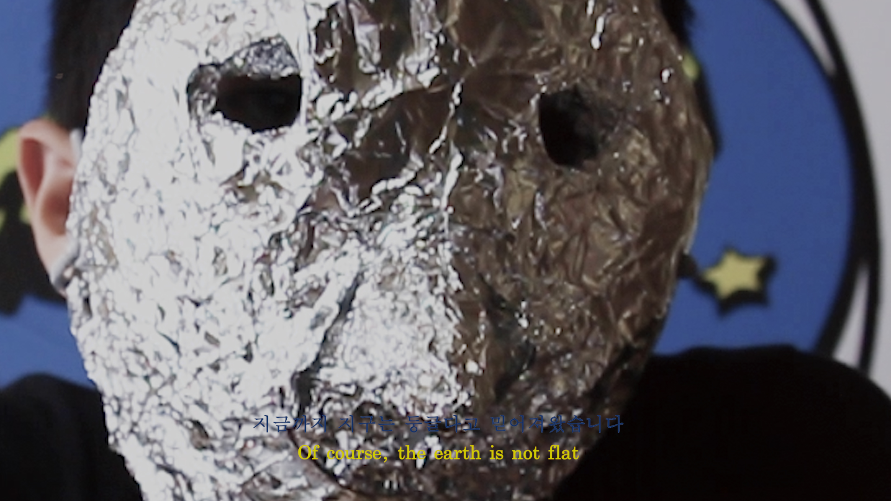

<!DOCTYPE html>
<html>
    <head>
        <meta charset="UTF-8">
        <title>Jacob's ladder</title>
        <link rel="stylesheet" type="text/css" href="flat.css">
        <link rel="stylesheet" href="jquery.bxslider.css">
        <script src="https://ajax.googleapis.com/ajax/libs/jquery/3.1.1/jquery.min.js"></script>
        <script src="jquery.bxslider.js"></script>
        <script>
          $(document).ready(function(){
            $('.slider').bxSlider();
          });
        </script>
    </html>
    <header>
    </header>

    <body>
      <div id="title">
          
      </div>
      <div class="slider">
        
        <div></div>
        <div></div>
        <div></div>
        
        <div></div>
        <div></div>
        <div></div>
        <div></div>
  

        
          
         </div>
     
         
       
        
        
      <div id="info">
        <span>  Jacob's Ladder, FHD video, colour, sound, 10’ 14”, 2018<br><br>
         
      </div>
      
      <div id="text">
        <span><br> The word 'flat' has spread like a buzzword in the art world in recent years. And the trend looked like a giant castella Store in Korean that quickly expanded and exploded. At that time, most people lined up and consumed, curious and antipathetic to the rapidly increased volume. Why  would anyone notice ‘flat’? What suddenly increased the volume of flatness and exploded? This work focuses on the word 'flat' and its phenomenon, which has been proliferated for several years, and begins to investigate an organization called 'flat-earth sociey' that seems to exist.
          <br><br>
          The "flat-earth society" is a web-based similar science organization that claims that the earth is flat, not spherical. The model of the "flat earth" they claim is a kind of hypothetical similar world. The organization was rebuilt around 2009 and is active on the Internet. Recently, however, the Flat Earth Society has gone beyond online to hold an international conference in Seoul</span><br><br><br>
        </div>
        
        <div class="video">
          </div>    
    </body>    